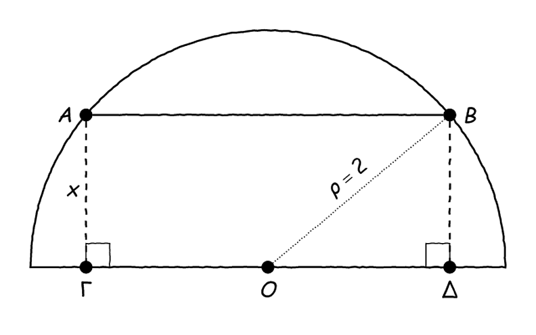
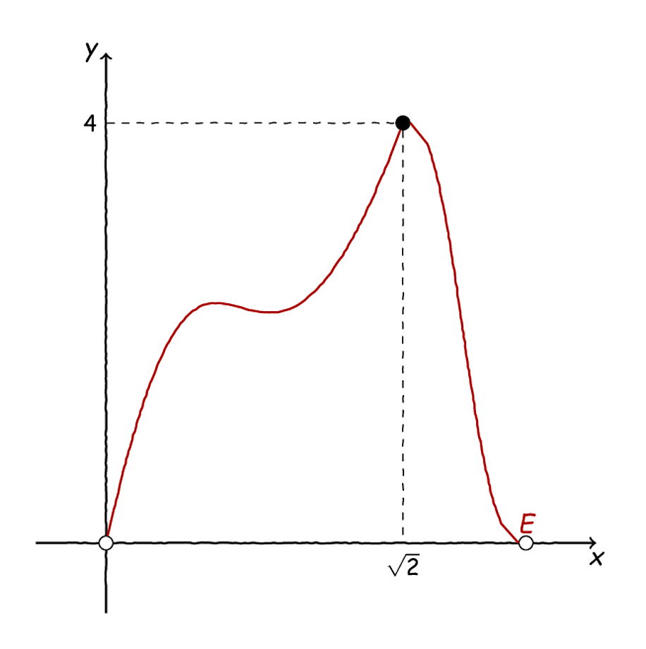

Τα Λυμένα: Θέμα #003#

Ένα ακόμα θέμα από τα «Λυμένα», πάλι στις συναρτήσεις, αρκετά φιλικότερο προς τα διαγωνίσματα και τις εξετάσεις αυτή τη φορά - ειδικά σε σχέση με το προηγούμενο θέμα.
Όπως πάντα, όλα τα λυμένα θέματα μπορείτε να τα βρείτε εδώ.
Εκφώνηση#
Δίνεται ένα ημικύκλιο κέντρου \(O\) και ακτίνας \(\rho=2\) και μία χορδή του, \(AB\) , παράλληλη στη διάμετρό του. Έστω, επίσης, \(\Gamma\) και \(\Delta\) οι προβολές των \(A,B\) στη διάμετρο του ημικυκλίου, αντίστοιχα και \(x\in(0,2)\) το μήκος της \(A\Gamma\) , όπως φαίνεται στο παρακάτω σχήμα:

Ένα ημικύκλιο, μία χορδή και ένα ορθογώνιο.#
Να εκφράσετε το εμβαδόν, \(E\) , του ορθογωνίου \(AB\Delta\Gamma\) ως συνάρτηση του \(x\) .
Αν \(E(x)=2x\sqrt{4-x^2}\) , \(x\in(0,2)\) :
Να αποδείξετε ότι \(E(x)\leq4\) για κάθε \(x\in(0,2)\) .
Να υπολογίσετε τη μέγιστη τιμή της \(E\) .
Να λύσετε την εξίσωση: .. math:: 4+(x-1)E(x)=frac{4-E(x)}{x}+4x,quad xin(0,2).
Εμπνευσμένη από: Σ.Β., σελ. 29, 3, 4/Α” Ομάδας.
Λύση#
Ας τα δούμε ένα-ένα:
Ερώτημα a.#
Λοιπόν, για το εμβαδό του ορθογωνίου μπορούμε απλά να το υπολογίσουμε κατά τα γνωστά (βάση επί ύψος):
Τώρα, \((A\Gamma)=x\) , αλλά τι γίνεται με το \((\Gamma\Delta)\) ; Αν το πάρουμε λίγο ψύχραιμα, θα δούμε ότι μπορούμε να υπολογίσουμε το μήκος \((O\Delta)\) με τη βοήθεια του μακαρίτη του Πυθαγόρα, καθώς το τρίγωνο \(OB\Delta\) είναι ορθογώνιο. Επομένως:
Συνεπώς, για το εμβαδό έχουμε:
Ερώτημα b.#
Λοιπόν, ας τα πάρουμε ένα-ένα, για \(E(x)=2x\sqrt{4-x^2}\) .
Ερώτημα b.i.#
Θα ξεκινήσουμε από το ζητούμενο και θα προσπαθήσουμε με ισοδυναμίες να καταλήξουμε σε κάτι που ισχύει (ή όπου μας βγάλει):
που ισχύει. Συνεπώς ισχύει και το ζητούμενο.
Αν σας άγχωσε λίγο το σημείο που υψώσαμε στο τετράγωνο, όλα καλά, καθώς και τα δύο μέλη είναι θετικά, αφού \(x\in(0,2)\) , οπότε υψώνουμε χωρίς τύψεις (αφού για θετικούς αριθμούς, η \(y=x^2\) είναι γνησίως αύξουσα).
Ερώτημα b.ii.#
Λοιπόν, αμέσως πριν δείξαμε ότι \(E(x)\leq 4\) για κάθε \(x\in(0,2)\) , επομένως, τι άλλο έχουμε να δείξουμε; Σαφώς, έχουμε αυτό που λέμε ένα «άνω φράγμα» για την \(E(x)\) , ωστόσο δεν έχουμε δείξει καμία ανισότητα της μορφής:
Επομένως, θα μπορούσε κάλλιστα να ισχύει, ας πούμε, ότι \(E(x)\leq 1,76\) , οπότε η μέγιστη τιμή θα ήταν σίγουρα μικρότερη του \(4\) , καθώς το \(=\) στην \(E(x)\leq 4\) δε θα ίσχυε ποτέ. Συνεπώς, πρέπει να ψάξουμε κάποιο \(x_0\) που να είναι η μέγιστη τιμή της \(E(x)\) , αλλά από πού να ξεκινήσουμε;
Όπως ίσως θα φαντάζεστε, η πρώτη μας σκέψη θα ήταν να ψάξουμε, όντως, για κάποιο \(x_0\in(0,2)\) για το οποίο \(E(x_0)=4\) και λίγη παρατηρητικότητα ίσως και να βοηθήσει σε αυτήν την αναζήτηση. Αν ρίξουμε μία ματιά στις πράξεις μας παραπάνω θα δούμε ότι ουσιαστικά αποδείξαμε ότι:
Αυτό τώρα, ισχύει και με \(=\) στη θέση του \(\leq\) καθώς δεν κάναμε κάτι που δεν ισχύει στην περίπτωση ισότητας, επομένως μπορούμε αναλόγως να αποδείξουμε και ότι:
Λίγο παραπέρα, το παραπάνω μας δίνει:
Στην περίπτωσή μας κρατάμε μόνο το \(x=\sqrt{2}\) , επομένως θα πρέπει να ισχύει \(E\left(\sqrt{2}\right)=4\) . Με αυτοπεποίθηση, αφήνουμε το πρόχειρό μας και πάμε στο «καλό» και γράφουμε: «Παρατηρούμε ότι:» συνεχίζοντας ως εξής:
Συνεπώς, \(E(x)\leq E\left(\sqrt{2}\right)\) , άρα η μέγιστη τιμή της \(E\) είναι η \(E\left(\sqrt{2}\right)=4\) .
Ερώτημα b.iii.#
Λοιπόν, η εξίσωσή μας είναι λίγο περίπλοκη, αλλά, τι να κάνουμε, θα δοκιμάσουμε αυτό που έχουμε δει καλύτερα από όλα: να φέρουμε τα πάντα στο ένα μέλος. Λοιπόν, έχουμε, αφού πρώτα κάνουμε τον κόπο να απαλείψουμε παρονομαστές:
Ωραία, και τώρα τι καταλάβαμε; Λοιπόν, η \(E(x)\) έχει τύπο, μπορούμε κάλλιστα να τον αντικαταστήσουμε και να κάνουμε πράξεις, ελπίζοντας να βγει κάτι. Αλλά, γενικά, όταν μιλάμε για πράξεις, συνήθως μιλάμε και για κόπο, οπότε ας το αφήσουμε για πιο μετά, όταν όλα τα άλλα θα έχουν αποτύχει. Μπορούμε να σκεφτούμε, στο μεταξύ, κάτι άλλο;
[Σκέψη]
Λοιπόν, μπορούμε να δοκιμάσουμε το άλλο μεγάλο μας όπλο όταν πρόκειται για λύση εξισώσεων: να παραγοντοποιήσουμε. Ας ξεκινήσουμε, αρχικά, με τα \(E(x)\) και ας δούμε πώς θα πάει:
Εδώ μπορούμε αρχικά να παρατηρήσουμε ότι για το τριώνυμο \(x^2-x+1\) έχουμε \(\Delta=-3<0\) , συνεπώς δεν έχουμε (πραγματικές) ρίζες. Τώρα, για την εξίσωση:
γνωρίζουμε ήδη ότι το \(x=\sqrt{2}\) αποτελεί λύση της εξίσωσης. Είναι όμως μοναδική; Για να το δούμε αυτό αρκεί να γυρίσουμε πίσω να ρίξουμε μία ματιά στη ζουμερή ισοδυναμία που γράψαμε παραπάνω:
Συνεπώς, η μοναδική λύση της εξίσωσης είναι η \(x=\sqrt{2}\) .
Προβληματισμός#
Έχουμε βρει, ως τώρα, τη μέγιστη τιμή της \(E(x)\) , οπότε ένας εύλογος προβληματισμός θα ήταν αν μπορούμε να πούμε και κάτι για τη μονοτονία της. Μάλιστα, ήταν μία σκέψη αυτό να αποτελεί και το τελευταίο ερώτημα του θέματος, ωστόσο «αυτολογοκρίθηκε» και αποφάσισε να μπει σαν παράθεμα. Μπορείτε, λοιπόν, να μελετήσετε την \(E(x)\) ως προς τη μονοτονία;
Λύση#
Αν δεν μπορείτε, εδώ είμαστε κι εμείς! Λοιπόν, βασικό εργαλείο μας στη μελέτη ως προς τη μονοτονία είναι, όπως ξέρετε πολύ καλά, ο ορισμός. Εδώ, πριν αρχίσουμε το ταξίδι μας, ας σκεφτούμε πώς μπορεί να μοιάζει η γραφική παράσταση της \(E(x)\) . Δεδομένου ότι έχουμε ένα ολικό μέγιστο ενώ για \(x\approx 0\) ή \(x\approx 2\) θα πρέπει να είναι \(E(x)\approx0\) , καθώς το εν λόγω ορθογώνιο γίνεται πολύ στενό (ή κοντό) σε κάθε περίπτωση, θα πρέπει αυτή να μοιάζει κάπως με αυτό που βλέπουμε στο παρακάτω σχήμα:

Κάτι σαν τη γραφική παράσταση της \(E\) .#
Τώρα, όπως βλέπετε, αναμένουμε στο σημείο \((\sqrt{2},4)\) η \(E(x)\) να αλλάζει το είδος της μονοτονίας της, γενικά, καθώς εκεί παρουσιάζει ένα ολικό μέγιστο, άρα, από τα αριστερά θα «ανεβαίνει», ενώ από τα δεξιά του θα «κατεβαίνει»footnote{Αυτό, όπως θα δούμε στο μέλλον, δεν είναι απόλυτα σωστό, αλλά προς το παρόν ας κρατήσουμε τη διαίσθηση.}. Προφανώς, αυτό δε σημαίνει απαραίτητα ότι η \(E\) θα είναι γνησίως αύξουσα στο \(\left(0,\sqrt{2}\right]\) και γνησίως φθίνουσα στο \(\left[\sqrt{2},2\right)\) , καθώς, όπως φαίνεται και στο παραπάνω σχήμα, μπορεί κάλλιστα να ανεβοκατεβαίνει σε καθένα από αυτά τα διαστήματα. Τι θα κάνουμε, λοιπόν;
Λοιπόν, ας πάρουμε \(x_1,x_2\in\left(0,\sqrt{2}\right]\) και ας δούμε αν μπορούμε να κάνουμε κάτι εκεί μέσα. Αρχικά, έχουμε:
Τις παραπάνω δύο σχέσεις δεν μπορούμε, σαφώς, να τις πολλαπλασιάσουμε κατά μέλη, καθώς δεν «κοιτάνε» από την ίδια μεριά. Μπορούμε, όμως, να κάνουμε το εξής τέχνασμα:
Μπορούμε, επομένως, να προσπαθήσουμε να «χτίσουμε» αυτή τη μορφή του τύπου της \(E\) :
Ουφ, πάλι αδιέξοδο… Αυτές οι δύο ανισότητες, τώρα, δεν μπορούν να προστεθούν κατά μέλη, προφανώς, οπότε πάλι καταλήξαμε στο ίδιο σημείο.
[Σκέψη]
Εμείς θέλουμε να καταλήξουμε σε κάποια ανισότητα της μορφής \(E(x_1)<E(x_2)\) ή \(E(x_1)>E(x_2)\) στην περίπτωσή μας. Επομένως, μπορούμε, ίσως, να ξεκινήσουμε να πειραματιζόμαστε με μία από αυτές και να προχωρήσουμε με ισοδυναμίες προς κάτι που ισχύει:
Ωραία, και τώρα τι μπορούμε να κάνουμε; Χμμμ… Μπορούμε, όπως πάντα, να τα φέρουμε όλα αριστερά και να δούμε τι θα βγει:
Τώρα, τι μπορούμε να πούμε για το παραπάνω; Λοιπόν, αρχικά έχουμε υποθέσει ότι:
ενώ, επειδή \(x_1,x_2>0\) έχουμε \(x_1+x_2>0\) . Έτσι, μπορούμε να απαλείψουμε τους δύο αυτούς παράγοντες και να πάρουμε το εξής:
Η ανισότητα αλλάζει φορά καθώς απαλείψαμε έναν αρνητικό και έναν θετικό παράγοντα, άρα, για να είναι το γινόμενο και των τριών αρνητικό θα πρέπει ο τρίτος παράγοντας που μας έμεινε να είναι θετικός. Τώρα, τι μπορούμε να πούμε για αυτό που μας έμεινε; Αρχικά, ας θυμηθούμε ότι έχουμε περιοριστεί, προς το παρόν, στο \(\left(0,\sqrt{2}\right]\) καθώς εκεί μπορούμε να ελπίζουμε ότι η \(E\) θα είναι γνησίως μονότονη. Έτσι, έχουμε \(x_1\leq\sqrt{2}\) και \(x_2\leq \sqrt{2}\) , οπότε, υψώνοντας στο τετράγωνο μπορούμε να πάρουμε:
Τώρα, προσθέτοντας κατά μέλη, έχουμε:
Συνεπώς, για \(x_1,x_2\in\left(0,\sqrt{2}\right]\) ισχύει το εξής:
συνεπώς η \(E\) είναι γνησίως αύξουσα στο \(\left(0,\sqrt{2}\right]\) .
Ωραία τα καταφέραμε ως εδώ! Για το \(\left[\sqrt{2},2\right)\) τώρα μπορούμε να εργαστούμε ανάλογα, ανακυκλώνοντας το παραπάνω επιχείρημα. Έχουμε δείξει ως τώρα την παρακάτω ισοδυναμία:
Ομοίως, μπορούμε να αποδείξουμε και το εξής:
Τα παραπάνω ισχύουν υπό την προϋπόθεση ότι \(x_1,x_2\in(0,2)\) το οποίο ικανοποιείται στην περίπτωσή μας. Για \(x_1,x_2\in\left[\sqrt{2},2\right)\) έχουμε:
Συνεπώς, προσθέτοντας κατά μέλη παίρνουμε:
οπότε, από την παραπάνω ισοδυναμία, έχουμε:
άρα η \(E\) είναι γνησίως φθίνουσα στο \(\left[\sqrt{2},2\right)\) .
Μέχρι το επόμενο, καλό μεσημέρι και καλό διάβασμα!
Το θέμα μπορείτε να το βρείτε και εδώ καθώς και στη σελίδα του διδακτικού υλικού.